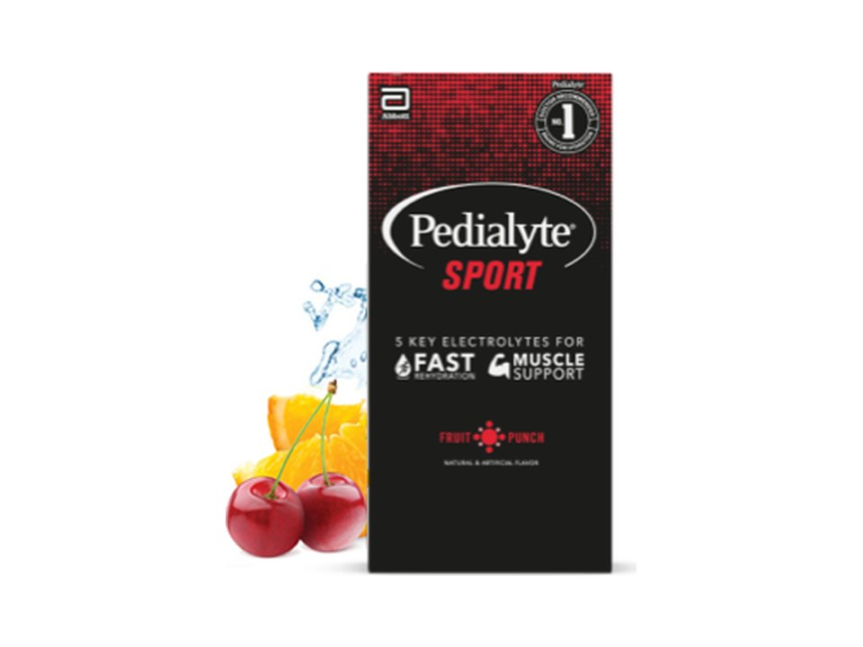

Product imagery supplied by the retailer. Packaging may vary — verify the Supplement Facts panel on the container you receive.
Pedialyte
Sport Powder Packs
Our analysis — editorial take, not from the label
Delivers roughly 2.5 times the sodium of Pedialyte's classic powder, positioning it for athletes with heavier sweat losses rather than everyday sipping.
- Sodium
- 650 mg
- Potassium
- 600 mg
- Sugar
- 7 g
- Servings
- 36
Price tier: Mid-range · relative cost per full serving across this database
We don't list dollar prices — they change daily and go stale. Check the live price instead:
View current price Compare all hydration mixesScoop Sense doesn't collect user reviews and won't invent them. Read customer reviews on Amazon
Affiliate links — Scoop Sense may earn a commission at no additional cost to you.
Available in Fruit Punch, Lemon-Lime, and Berry Freeze, sweetened with dextrose plus sucralose and acesulfame potassium.
Label verified: July 2026 · View label source
Label data
Per full serving · 36 servings per container · from the manufacturer's panel
| Sodium | 650 mg |
|---|---|
| Potassium | 600 mg |
| Magnesium | 55 mg |
| Sugar | 7 g |
| Proprietary blend | No |
Primary label source: Abbott Store — official Pedialyte retailer, Nutrition Facts · verified July 2026
Cautions
- Contains 7 g of added sugar per packet.
- Sodium and chloride levels are higher than standard hydration drinks; not intended for sodium-restricted diets without medical guidance.
Formulated for healthy adults — not intended for anyone under 18. Full health & safety notes
Product details
Where this label sits
Pedialyte Sport Powder Packs is one of the hydration mixes in the Scoop Sense database. Every active ingredient on the panel is listed with its own dose — nothing is hidden inside a blend total. It runs 36 servings per container at the full labeled serving. Everything on this page comes from the manufacturer's supplement facts panel as of July 2026 — never from the marketing page.
Key ingredients & studied doses
- Sodium · 650 mg. Sodium is the electrolyte lost in the largest amount through sweat during exercise.
- Potassium · 600 mg. Potassium supports normal muscle contraction and fluid balance alongside sodium.
- Magnesium · 55 mg. Magnesium supports normal muscle and nerve function as part of the electrolyte balance.
Flavors & sweetener
Available in Fruit Punch, Lemon-Lime, and Berry Freeze, sweetened with dextrose plus sucralose and acesulfame potassium.
Who it's best for
Everyday training and moderate sweat losses — a middling sodium load. The sugar is part of the design, aiding fluid uptake the way oral rehydration research uses glucose — skip it if you want zero sugar. Derived from the label figures above — not medical advice.
How we log this label
Every entry is built the same way: we read the current supplement facts panel, log each disclosed dose, compare it against the amounts used in published research, flag proprietary blends, and state the cautions plainly. The full methodology explains each step.
This label against the research
How we evaluate labelsEach bar shows the amount commonly used in published human research, and where this label's dose falls against it. Research amounts are context, not a recommendation — they are not doses, and nothing here is medical advice.
-
Sodium650 mg
The studied range is 300–700 mg of sodium per litre of fluid, and this label does not state the volume to mix a serving into — so its concentration, which is what the range measures, cannot be worked out from the panel. Check the mixing instructions on the pack.
Source: Mosler et al., German Journal of Sports Medicine 2020 (DGE position) — “the optimal sports drink should contain 400-1100 mg / l sodium in addition to carbohydrates (4-8%)”
Common questions about Pedialyte Sport Powder Packs
How much sodium is in Pedialyte Sport Powder Packs?
650 mg per serving, alongside 7 g of sugar. Sodium is the main electrolyte lost in sweat, but needs vary widely with sweat rate and diet — and daily sodium from food counts toward the same total.
Does Pedialyte Sport Powder Packs disclose every dose?
Yes — the label lists an individual amount for each ingredient, with no proprietary blends. That is what the "label fully disclosed" tag on Scoop Sense means, and it is what lets each dose be compared against the amounts used in published research.